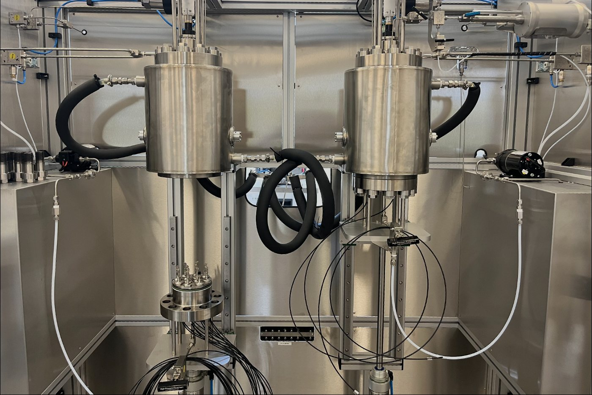

DEEP-C
Deep-sea Carbonates under pressure: mechanisms of dissolution and climate feedbacks

The deep seafloor—one of the largest carbon reservoirs on Earth—holds immense stores of calcium carbonate (CaCO₃), a mineral critical for long-term carbon cycling and climate regulation. Human-driven ocean acidification is triggering CaCO₃ dissolution in deep-sea sediments, releasing alkalinity that helps buffer excess CO₂. Yet, the physical and microbial controls on this process remain poorly quantified, particularly under abyssal and hadal conditions where extreme pressures prevail.
Despite its global importance for ocean biogeochemistry, CaCO₃ dissolution at depth is still modeled using outdated solubility constants and uncertain rate laws. This severely limits the reliability of Earth system models in predicting the fate of anthropogenic CO₂. Project Deep-C addresses this knowledge gap by combining high-pressure experimentation with global-scale modeling to resolve the mechanisms, rates, and climatic implications of deep-sea carbonate dissolution.
Objectives
Deep-C aims to uncover how pressure, mineral composition, and microbial activity govern CaCO₃ dissolution in deep-sea environments. It addresses 3 key questions:
- How does pressure influence the solubility and dissolution rate of diverse CaCO₃ minerals?
- To what extent do microbial respiration processes contribute to deep-sea CaCO₃ dissolution?
- How will changes in organic carbon flux affect global alkalinity generation and climate feedbacks?
Approach
Deep-C uses a novel multi-scale strategy:
- High-Pressure Reactors: Custom-designed reactors will simulate abyssal to hadal pressures (up to 1000 bars) while allowing in situ monitoring of pH and oxygen. These systems will enable precise measurements of CaCO₃ solubility, molecular diffusion, and dissolution kinetics.
- Cultured and Synthetic Carbonates: ¹³C-labeled calcite and aragonite from cultured coccolithophores, foraminifera, algae, and synthetic minerals will be used to trace dissolution pathways under controlled conditions.
- Microbial Sediment Experiments: Sediments and microbial communities sampled off Marseille and from Japan's hadal trenches will be used to assess how bacterial respiration influences carbonate dissolution.
- Global Modeling: Results will be integrated into the NASA-funded ECCO-Darwin ocean biogeochemical model to simulate current and future CO₂ neutralization dynamics via seafloor CaCO₃ dissolution.
Expected Impact
Deep-C will pioneer a new generation of high-pressure oceanographic research, providing:
- Empirical rate laws and updated solubility constants for use in Earth system models
- Mechanistic insights into carbon cycling in extreme environments
- Revised estimates of CO₂ removal via deep-sea carbonate dissolution
- A pressure reactor facility at CEREGE available to the broader research community
By clarifying the role of the deep ocean in buffering anthropogenic CO₂, Deep-C will inform future climate policies and enhance predictive capacity for carbon-climate feedbacks.
Funded and hosted by